Acerca del curso
Círculo Dorado nace como un espacio de práctica y acompañamiento hacia la meditación, buscando despertar la sensibilidad, expandir la conciencia y cultivar un estado interior luminoso, claro y asertivo.
Módulo 1 del 29 Jul al 16 Sep · Módulo 2 del 23 Sep al 11 Nov – 2026
Todos los miércoles de 18:00 a 19:10 hs
Meditar es estar presente con todo lo que es y con todo lo que hay. Las puertas son el cuerpo físico, la respiración y el movimiento. La práctica semanal, sostenida en grupo, es el camino.
El recorrido se organiza a través de los siete centros energéticos como mapa de un proceso: desde el cuerpo físico hacia el silencio, desde la sensación hacia la presencia. La estructura de cada encuentro se va profundizando semana a semana. El proceso nos guía.
Creemos que una conciencia despierta es el mayor acto de activismo: desde ella podemos sostener y nutrir nuestras causas más profundas. Lo único que necesitas es la disposición de volver, semana a semana, al mismo círculo.
Objetivos
- —Reconocer y habitar el estado meditativo, integrando el proceso que lo hace posible.
- —Desarrollar sensibilidad y autoconciencia a través de la práctica progresiva.
- —Reconocer la respiración y el cuerpo físico como puentes hacia la meditación.
- —Aprender técnicas respiratorias que ordenan y potencian la energía vital.
- —Explorar el movimiento consciente para liberar tensiones y preparar la quietud.
- —Crear un espacio colectivo de práctica, confianza y transformación.
Estructura de cada encuentro
El recorrido
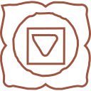
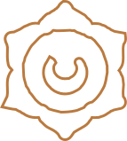
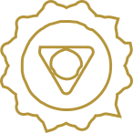
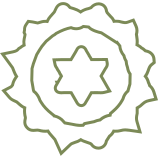
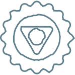
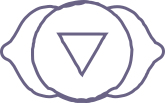
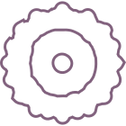
Facilitadores

Cecilia Fiorito
Docente y tallerista de yoga desde 2009, formada en Instituto Patanjali. Montevideo. Profesora de Ashtanga Vinyasa Yoga.
Licenciada en Comunicación. Estudió arte. Se formó en trabajo con grupos desde el enfoque gestáltico y es operadora terapéutica en adicciones. Ha dado clases, cursos, retiros y talleres en diversas instituciones y organizaciones, continuando su formación junto a referentes nacionales e internacionales.
Su práctica está orientada hacia la integración del movimiento físico, social y espiritual de las personas y las comunidades como creadoras de un mundo armonioso y libre. Investiga la relación entre disciplinas y las posibilidades de trascender las limitaciones creadas por la cultura y el lenguaje.

Cristóbal Severin
Artista, diseñador y gestor cultural. Co-fundador de Ánima Espacio Cultural. Hace veinte años investiga y practica yoga y tantra, habiendo transitado diversas escuelas y tradiciones: Hatha, Ashtanga, Iyengar, Vinyasa y Kundalini. Su camino actual de estudio lo conduce hacia el Tantra no-dual y el Shaivismo de Cachemira, explorando los procesos psicológicos y fisiológicos de la meditación desde una perspectiva tanto espiritual como científica — herramientas para proyectar una vida plena y armoniosa. Su práctica es también su investigación.
Programa completo
Inscripción
Condiciones de inscripción